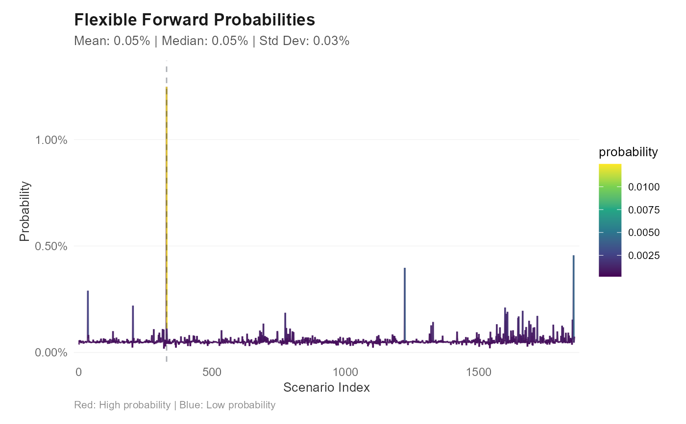

Match different decay-factors on the covariance matrix.
Usage
double_decay(x, slow, fast)
# Default S3 method
double_decay(x, slow, fast)
# S3 method for class 'numeric'
double_decay(x, slow, fast)
# S3 method for class 'matrix'
double_decay(x, slow, fast)
# S3 method for class 'ts'
double_decay(x, slow, fast)
# S3 method for class 'xts'
double_decay(x, slow, fast)
# S3 method for class 'tbl'
double_decay(x, slow, fast)
# S3 method for class 'data.frame'
double_decay(x, slow, fast)References
De Santis, G., R. Litterman, A. Vesval, and K. Winkelmann, 2003, Covariance matrix estimation, Modern investment management: an equilibrium approach, Wiley.
Examples
# \donttest{
library(ggplot2)
slow <- 0.0055
fast <- 0.0166
ret <- diff(log(EuStockMarkets))
dd <- double_decay(ret, slow, fast)
dd
#> <ffp[1859]>
#> 0.000372852 0.000398851 0.0005750612 0.0004815779 0.000553617 ... 0.0007460361
autoplot(dd) +
scale_color_viridis_c()
#> Scale for colour is already present.
#> Adding another scale for colour, which will replace the existing scale.

# }